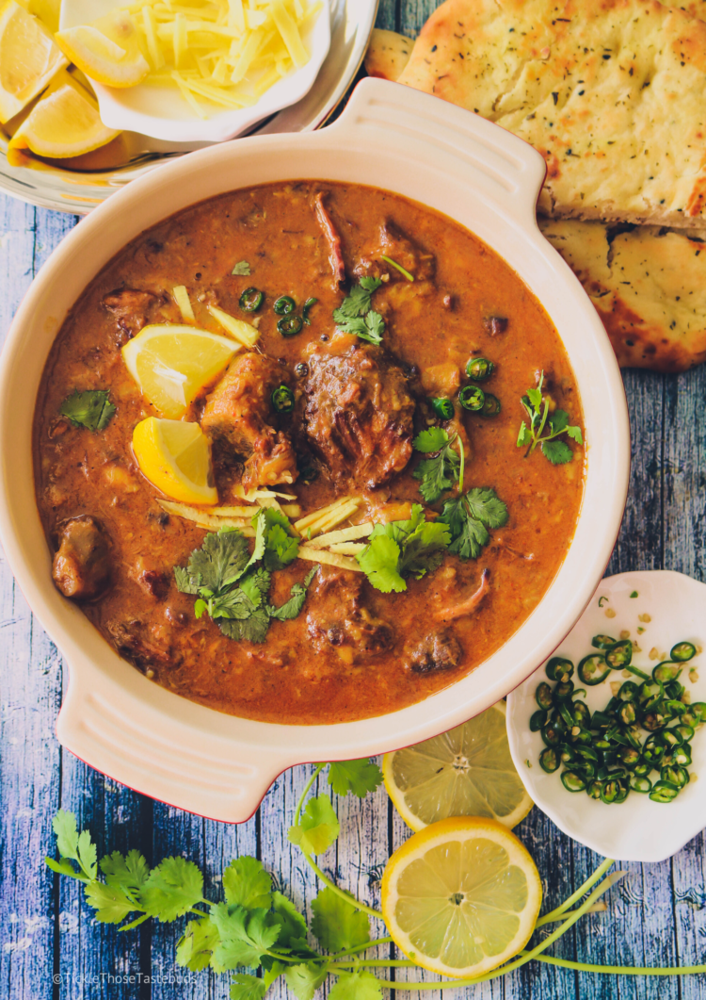

Witness the scenic beauty of valleys that will take your breath away.
Swat Valley: The Switzerland of Pakistan
Escape to Swat Valley, often hailed as the 'Switzerland of Pakistan,' where lush green meadows, snow-capped peaks, and pristine rivers create a picturesque haven for nature lovers and adventure seekers alike.Explore the enchanting Swat Valley, a haven of serenity surrounded by the majestic Hindu Kush, where every corner reveals nature's artistry.
Hunza Valley: A Shangri-La Retreat
Discover Hunza Valley, a Shangri-La retreat nestled in the heart of the Karakoram Range, boasting breathtaking landscapes, ancient forts, and the warm hospitality of the Hunza people.Nestled in the Karakoram, Hunza Valley is a retreat for the soul, where the echo of ancient stories harmonizes with the stunning landscapes, inviting you to find tranquility in the heart of Pakistan.
Neelum Valley: A Symphony of Nature
Immerse yourself in the symphony of nature in Neelum Valley, a gem in the Himalayas, where lush forests, crystal-clear rivers, and majestic mountains compose a melody that captivates the soul.Journey through Neelum Valley, where nature's symphony plays in the form of waterfalls, alpine meadows, and towering peaks, creating a harmony that echoes through the heart of Pakistan.
2. Foods Of Pakistan:
Savor the delicious and diverse cuisine that Pakistan has to offer.
Biryani: A Culinary Symphony
Savor the melody of spices and the perfect blend of flavors – Biryani is not just a dish; it's an invitation to taste the soul of Pakistan.Let the aroma of Biryani guide you to a culinary adventure, where every bite tells a tale of tradition, love, and the vibrant spirit of Pakistan.
Nihari: A Hearty Tradition
Warm your soul with Nihari, a hearty tradition that invites you to the heart of Pakistani cuisine, where spices and slow-cooking create magic.

Experience the comforting embrace of Nihari, a dish that has been nourishing generations and is now ready to delight your taste buds.
Chapli Kebab: A Culinary Masterpiece
Satisfy your taste buds with Chapli Kebab, a culinary masterpiece that combines the bold flavors and textures of Pakistan in every bite.Indulge in the culinary poetry of Chapli Kebab - a masterpiece that invites you to savor the flavors and celebrate the richness of Pakistani cuisine.
3. Wildlife of Pakistan:
Encounter the diverse wildlife of Pakistan in its natural habitat.
Indus River Dolphin: A Rare Gem
Immerse yourself in the aquatic wonders of Pakistan - the Indus River Dolphin invites you to witness its unique beauty, a rare gem in our waters.Explore the secret world beneath the ripples - witness the enchanting dance of the Indus River Dolphin, a symbol of purity in Pakistan.
Markhor: The National Pride
Roam with the kings of the mountains - the Markhor, Pakistan's national pride. A regal presence amidst the rugged terrains.In the high altitudes, witness the Markhor's noble stride, an iconic symbol of Pakistan's commitment to wildlife conservation.
Snow Leopard: A Himalayan Emissary
In the land of snow and silence, meet the Snow Leopard – a rare glimpse into the elusive beauty of Pakistan's Himalayan wilderness.Join the quest for the elusive Snow Leopard, a majestic Himalayan emissary that roams the heights of Pakistan's breathtaking landscapes.
4. Mountains Of Pakistan:
Explore the breathtaking beauty of Pakistan's majestic mountains.
Himalayas: The Majestic Giants
Discover the allure of the Himalayas: A haven for thrill-seekers, nature lovers, and those seeking the ultimate escape.Wander where the Wi-Fi is weak, and the connection with nature is strong. Welcome to the Himalayas!
Karakoram Range: Glacial Beauty
Glacial whispers and frozen wonders: Journey through the Karakoram, where nature's artwork takes center stage.Where ice and rock dance in harmony: Explore the pristine beauty of the Karakoram Range, a frozen paradise.
Hindu Kush: A Cultural Tapestry
Step into the embrace of the Hindu Kush: A cultural odyssey where ancient traditions and breathtaking landscapes intertwine.In the heart of heritage: Unravel the rich cultural treasures of the Hindu Kush, where the past meets the present.